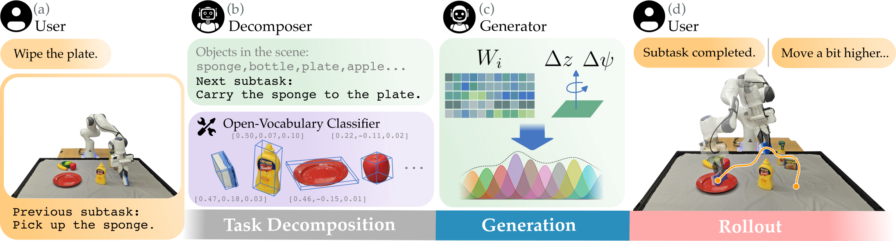

Enabling robots to perform novel manipulation tasks from natural language instructions remains a fundamental challenge in robotics, despite significant progress in generalized problem solving with foundational models. Large vision and language models (VLMs) are capable of processing high-dimensional input data for visual scene and language understanding, as well as decomposing tasks into a sequence of logical steps; however, they struggle to ground those steps in embodied robot motion. On the other hand, robotics foundation models output action commands, but require in-domain fine-tuning or experience before they are able to perform novel tasks successfully. At its core, there still remains the fundamental challenge of connecting abstract task reasoning with low-level motion control. To address this disconnect, we propose Language Movement Primitives (LMPs), a framework that grounds VLM reasoning in Dynamic Movement Primitive (DMP) parameterization. Our key insight is that DMPs provide a small number of interpretable parameters, and VLMs can set these parameters to specify diverse, continuous, and stable trajectories. Put another way: VLMs can reason over free-form natural language task descriptions, and semantically ground their desired motions into DMPs — bridging the gap between high-level task reasoning and low-level position and velocity control. Building on this combination of VLMs and DMPs, we formulate our LMP pipeline for zero-shot robot manipulation that effectively completes tabletop manipulation problems by generating a sequence of DMP motions. Across 20 real-world manipulation tasks, we show that LMP achieves 80% task success as compared to 31% for the best-performing baseline.

LMP pipeline for a single subtask rollout. $(a)$ The robot begins with a user-provided task description. The robot then collects an image capturing the current environment state, and remembers any previously performed subtask(s). $(b)$ The decomposer $\pi_D$ identifies scene objects and outputs a subtask for the next DMP to complete. An open-vocabulary classifier and depth sensing are used to estimate 3D object locations. The scene description and proposed subtask are then forwarded to the DMP weight generator $\pi_G$. $(c)$ The generator predicts DMP weights and auxiliary parameters to define the low-level reference trajectory. $(d)$ The robot tracks the continuous trajectory generated from the predicted DMP parameters. Optionally, the user may observe the robot and provide natural-language feedback about any mistakes. If the user gives this refinement $r$, then the robot resets the rollout and the process repeats from $(b)$.
Understanding spatial relations between objects in the environment.
Move the fruit which is on the right towards the bottle.
Pick the chip bag which is to the right of the can.
Pick the chip bag on the left of the table.
Move the can to the center of the table.
Pick the apple from the bowl and place it on the table.
Recognizing configurations the robot must avoid.
Move the banana near the pear.
Place the apple in the bowl.
Inferring intent from under-specified instructions.